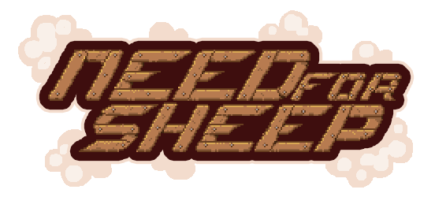
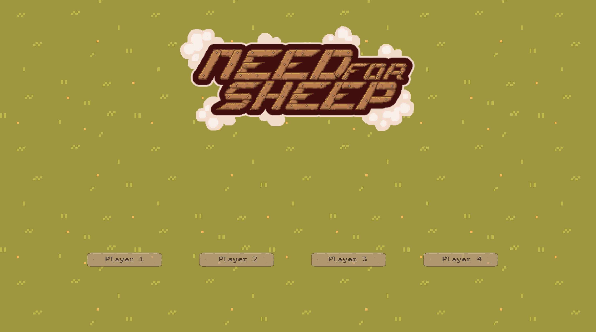
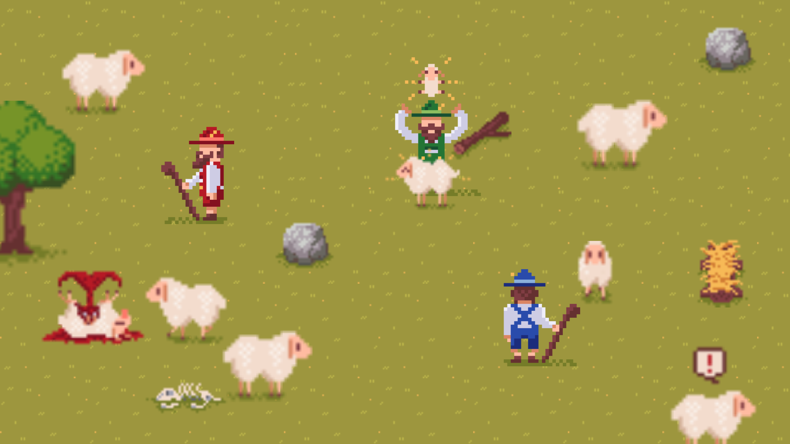

This game was created for the 2018 Winter Semester Game Jam at the Technical University of Munich. It was a 48-Hour Jam, which forces you to work very fast. The topic of the gamejam was "Discovery" which was something very different to the usual topics. We decided to create a game where you play as a shepherd who has to discover/find the wolf amongst the sheep.
It was a 4-Player game, where 3 played as shepherds and the other played as the wolf. The wolf looked exactly like the sheep, which were roaming around on the field. We implemented a swarming behavior to the sheep, which made it a little bit more interesting to watch and play. This meant that the wolf had to act like he was one of the sheep so that the shepherds don't notice him. While doing that he had try to kill as many sheep as possible. The shepherds had the job of delivering new babies, because otherwise the sheep in labor would die. The goal for the wolf was to kill a certain amount of sheep without being discovered. For the shepherds we had them work against that by making their goal to reach a certain amount of sheep in the herd.
It was a fun little game and even won the 4. place out of around 30 games. It was also awarded with the "Best Art" award.
  